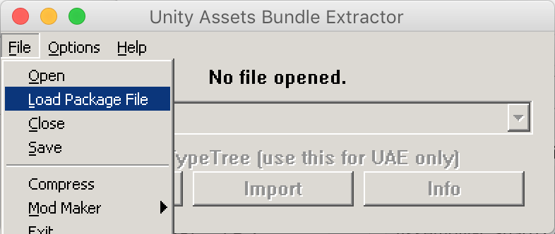
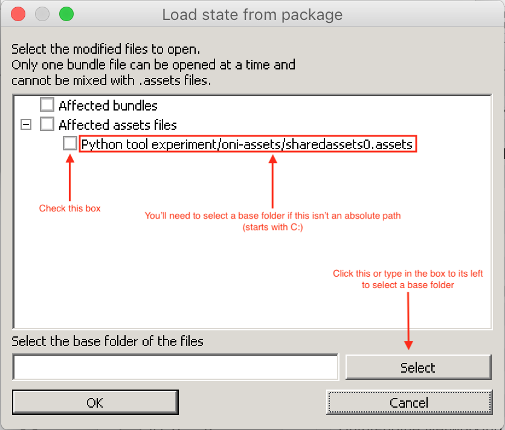

Written by @tellowkrinkle.
Warning: Old Information on this page
We used to have lots of different scripts you would setup and run to update the sharedasssets0.assets. Now we have a monolithic build.py script which does everything at once - you just have to edit the various files in the assets folder before you run it. Please keep that in mind when reading this page as this wiki may not have been fully updated yet.
These scripts can be used to easily update the sharedassets0.assets file in Higurashi games. This can save a lot of clicking in UABE and string edits were not even possible without these scripts.
Note: All scripts require Python 3, you may need to replace calls to pip and python with pip3 and python3 if that's what they are on your computer.
There is also another tool written in Rust which can simplify the process even more and you might not even need to read all the details below.
Installation¶
build.py users
If using the build.py, dependencies will be installed automatically. Use a virtual environment if you do not want packages installed globally.
Before using these scripts, run the following command to install the dependencies.
pip install -r requirements.txt
Installation - decrunch error¶
This should no longer occur if you use the above requirements.txt to install dependencies, but I've kept the old text below for reference.
UnityPack has dependency on something called decrunch which requires Visual C++ Build Tools 14.0 (on Windows) but can still fail to install even if you have them. We're not using the part that needs decrunch (it's only used to decompress certain formats of image assets) anyway so if you run into these issues, simply download this fork of unitypack where the dependency is removed and install if with python setup.py install from within its folder.
UnityTextModifier¶
build.py users
This will be run automatically when build.py is run. Just make sure you've edited the ui-editing-scripts\assets\text-edits.jsonfile.
This script will allow you to edit text files embedded in the asset files of games. This includes most UI elements.
UnityTextModifier.py requires three arguments, the .assets file that contains the text you want to edit, a JSON file listing the edits you want to make, and an output directory where the edits will be outputted. The JSON file should be formatted as an array of objects with the fields CurrentEnglish, CurrentJapanese, NewEnglish, and NewJapanese.
There's also an optional Discriminator field, which shouldn't be used unless the script finds multiple copies of your string in the file. The script will give a message like Multiple assets found for ON / ON, candidates are 0: 0x6031370, 1: 0x6038090 ..., then you can add a line like Discriminator: 0 to a block in your JSON file like the below example.
Here's an example JSON file:
[
{
"CurrentEnglish": "Original",
"CurrentJapanese": "オリジナル",
"NewEnglish": "PS3",
"NewJapanese": "PS3"
},
{
"CurrentEnglish": "Updated",
"CurrentJapanese": "新規",
"NewEnglish": "MangaGamer",
"NewJapanese": "MangaGamer"
},
{
"CurrentEnglish": "Watanagashi 12-3",
"CurrentJapanese": "綿流し編 １２日目３",
"NewEnglish": "Watanagashi Day 12-3",
"NewJapanese": "綿流し編 １２日目３"
},
{
"CurrentEnglish": "ON",
"CurrentJapanese": "全て",
"NewEnglish": "Вкл",
"NewJapanese": "全て",
"Discriminator": 0
},
{
"CurrentEnglish": "ON",
"CurrentJapanese": "ON",
"NewEnglish": "Вкл",
"NewJapanese": "ON",
"Discriminator": 1
}
]
Run the program with python UnityTextModifier.py sharedassets0.assets changes.json outputFolder
The program will then output one ###.dat file per change into the specified output folder, where the ### is the object ID of the file that it should replace in the assets bundle. These can be used directly with EMIPGenerator.py or manually added in using UABE.
EMIPGenerator¶
build.py users
This will be run automatically when build.py is run. Just make sure you've edited/added files to the ui-editing-scripts\assets folder.
This script will allow you to collect large numbers of asset bundle modifications into one large file that can be applied in one step using UABE.
EMIPGenerator requires three arguments, the .assets file that you want to edit, a directory of edits to make, and the name of the output file (should have the extension .emip or UABE won't let you load it).
The edit directory will be read as follows:
- Files that start with a number will replace the object with that number in the assets folder. For example,
2345.datwill replace object number 2345.2345 Some helpful note as to what this file is.datwill also replace object number 2345. Files outputted by UnityTextModifier will be named properly to get picked up by this mode. - Files that don't start with a number but are in the format
name_type.datwill replace the first item in the bundle that has that name and type (for example,ConfigHigurashi_Texture2D.datwill replace the first item namedConfigHigurashithat is aTexture2D. Note that due to issues with UnityPack misreading files, the application uses a very messy way of searching files and therefore may not properly work with all file types in this mode. The first time you try to add a file in this mode, make sure the program doesn't printCouldn't find object named <name> for <filename>, skipping, which indicates that the script failed to find an object to replace. If this happens, manually look up the ID and prepend it to the file. - Files that end in
.pngwill be converted toTexture2Dassets before they are inserted into the EMIP. - Any file that does not start with a number or have an underscore in its name will be completely ignored
- Any file that does have an underscore in its name but doesn't match a file in the asset bundle will still be ignored but may cause the program to run slower (due to searching the whole bundle for a matching file)
Run the program with python EMIPGenerator.py sharedassets0.assets inputFolder output.emip. Then, launch UABE and select File → Load Package File and select your emip file. If you get the error Unable to read the bundle file! (Invalid file or unknown version?), this means that you accidentally selected File → Open instead of File → Load Package File. Check the box next to the asset file on the following screen and if it doesn't show the full path to the file (starting with C: or whatever drive letter it's in), click the button near the bottom to select a base folder that will get the correct path. Then click OK, which will load the main bundle editing interface with all the edits already in. From here you can immediately select File → Save and save the output asset bundle.
UABE Screenshots¶
Select File → Load Package File and select your .emip file

Check the box and add a base folder if needed, then press OK

Save the new bundle

TMPAssetConverter¶
Rei and Hou Plus
This method does not work for Rei (Ch.9) or Hou Plus (Ch.10). See below section on "Adding Font Support for a New Language" below.
This script converts assets outputted by the current version of TextMeshPro into ones that can be read by the version used by the games. Note that if TextMeshPro updates it may stop working.
To use this, you will first need to generate a text atlas using TextMeshPro. Newer versions of Unity will output assets in a different format, so you will need an older one. 5.5.5 is known to work, while 2018.2 is known to not work. Due the python library having issues reading the assets outputted by TextMeshPro, you will need to then use UABE to extract the Atlas (Texture2D) and MonoBehaviour files from the asset, using the Export Raw button. If your version of Unity was too new, you'll find out here as UABE will fail to open the asset file.
You'll also need the MonoBehaviour file that you're trying to replace extracted from the game's asset bundle. The MonoBehaviour files contain pointers to other files in the assets so you can't reuse a file extracted from one chapter. For example if you want to replace the msgothic_0 font, use Export Raw on the msgothic_0 SDF file and save it as oldMonoBehaviour.dat:

Then, run python TMPAssetConverter.py newAtlas.dat newMonoBehaviour.dat oldMonoBehaviour.dat outputFolder and the converter will create two files in the output folder with the same name as the two input files. These can be substituted back into the asset bundle. The atlas file can be left out if you don't need to convert it (if you already have a converted copy)
Getting character lists for font files¶
If you don't want to install Swift
I've added a Python script in the ui-editing-scripts\scripts\CharacterInfoExtraction\PythonTextExtractor\extract.py which performs the same job, but I haven't tested it extensively, just used it once.
To make sure that the character sets you use have all the characters used by the games, use scripts in the CharacterInfoExtraction subfolder.
More detailed info on each of the scripts will be below, but assuming you compiled all the swift programs there and put them in the working directory, you can get a list of all the characters used in the Japanese script like this: cat pathToHigurashiDataFolder/StreamingAssets/Update/*.txt | ./HigurashiTextExtractor - j | ./UniqueCharacters - > japaneseScriptCharsUsed.txt. Note that you can get all the games at once by using multiple wildcards, for example if you have all the Mac versions in a folder you can do all of them at once with folder/Higurashi*.app/Contents/Resources/Data/StreamingAssets/Update/*.txt. Replace the j with e to get all the characters used in the English script.
That's all you really need for the Japanese script (I recommend taking the kanji from that file and pasting them over the msgothic_0_charset_Japanese.txt in the scripts repo to make your final charset)
For English, you'll need to collect a few more files, since the font behind msgothic_2 will be used to display the game's menus, including the Japanese ones. Collect all the text used in strings in asset files using ./AssetBundleStringExtractor pathToHigurashiDataFolder/*.assets | ./UniqueCharacters - > assetBundleCharsUsed.txt. Then, clone the DLL code repository and cat all the Assets.Scripts.UI.Tips/TipsData.cs files along with the console arcs tips JSON together and run that through ./UniqueCharacters. Finally, you can cat englishScriptCharsUsed.txt assetBundleCharsUsed.txt tipsCharsUsed.txt | ./UniqueCharacters - > englishCharset.txt. Like with the Japanese, copy the kanji out of that and paste it over the kanji in the scripts repo's msgothic_2_charset_OtherLang.txt. This is to preserve the extra characters which were added to make translation into other languages easier.
Adding Font Support for a New Language (Chapters 1-8 ONLY)¶
The first thing you'll need is a copy of Unity 5 (I used 5.5.5 but I would expect newer versions of Unity 5 to work as well). Once you have that, create a new project, go to the Asset Store, and search for and download TextMeshPro.
Preparing the character list¶
To make the font file, you will need a list of all the characters you want in it. Annoyingly, some of the Japanese parts of the games still rely on the English font, so you'll need to have those characters in addition to the ones you use for your language's character support. Download the current list from msgothic_2_charset_OtherLang.txt in here, which is the list of characters in the current English font. If your language's characters are already in that file, you shouldn't need to be doing font file editing at all. Otherwise, modify the text file to replace all the accented roman characters before the ←↑→↓ with all the characters you want in your font. Don't remove the characters after that point, because they're required to properly display some things in Japanese mode. Once you've done that, drag the new txt file into the Unity project you made.
Preparing the font file¶
Since you'll need support for the Japanese characters in addition to your own language, you'll need to add them to your font file. If your font file already has Japanese support (which may be the case for some Chinese or Korean fonts), you can skip this step. Otherwise, download FontForge and one of the TTF fonts here. Open both the target font and the one you just downloaded using FontForge. Navigate to Element → Font Info with both fonts, go to the General tab, and adjust the Em Size of one of the fonts to match the other (if you don't do this, one of the fonts will be way too small or big). Then, select Element → Merge Fonts... in the window for the target font to copy all missing glyphs from the Japanese font over.
In addition, some fonts (like our current English font) use really thin lines for the ☆ character, which Higurashi uses a lot. Thin lines don't do very well with the font rendering system the game uses, which makes the character look really bad. Navigate to the entry for ☆, which you can do easily by selecting View → Goto and typing uni2606, and check if your font uses really thin lines. If it does, go to the Japanese font, go to the same spot, and copy and paste its ★ and ☆ over yours.
Finally, export the new font to a ttf with File → Generate Fonts... and drag the font file into Unity.
Generating the SDF font¶
In your Unity project, choose Window → TextMeshPro → Font Asset Creator. Select your font as the font source, which should be there if you dragged it into your Unity project. For the font size, choose Custom Size. The current fonts use 26pt, but you can choose whatever you like. Bigger font sizes use more space but look nicer. Change Font Padding to 6 pt. If your characters almost fit in the atlas but not quite, you can change the packing method from Fast to Optimal to pack a few more characters in.
For the Atlas Resolution, larger numbers take up more space but allow more or larger characters. The current Japanese font contains about 3000 26pt Japanese characters and fits in 2048x2048, taking up 4MB. For Character Set, choose Characters from file and choose the txt file you added earlier. Leave Font Style at Normal/2 and change Font Render Mode to Distance Field 32 (Note: This is the slowest and highest quality. If you're still trying to figure out what font/atlas sizes you need, I recommend first choosing Hinted Smooth, which will slightly underestimate the size of the characters but be super fast, then use Distance Field 16 which will get all the character sizes right while still being faster than Distance Field 32, before finally choosing Distance Field 32 for the one you save).
Next, click Generate Font Atlas. This will take a while for large atlases. When it's done, it will say in the box if it was unable to fit any characters. If the resulting atlas is completely full, this is probably because those characters didn't fit, in which case you should adjust your atlas size or font size. Otherwise, this is because TextMeshPro failed to find those characters in your font. If it's just some newline characters or spaces this is fine, just look through them to make sure it didn't miss any characters that you think you need.
Once you've saved the font, use the Unity inspector to change its Line Height to be equal to its Point Size. This is what MS Gothic uses, and a lot of the game's character spacing expects this to be the case.
From here, follow the directions above for TMPAssetConverter to add your font to the game.
Adding Font Support for a New Language (Higurashi Rei onwards ONLY)¶
For Rei, the method used for Chapters 1-8 doesn't work. For now, we have the following process.
Please keep in mind the instructions are rough around the edges - please let us know if they don't make sense or need updating!
Also, these instructions roughly follow this guide in Korean (thanks to 이칠공), which you can translate.
Creating the font¶
- Install the version of Unity matching the game (roughly). For example, Rei is currently either verison
2019.4.36f1or version2019.4.40f1, so we install version 2019.4.36 (generally the font generated on 2019.4.36 should work for all 2019.4.* versions). You can download them from the Unity Download Archive. - Create a new project
- Click Window->TextMeshPro->Font Asset Creator
- Follow the above "Adding Font Support for a New Language (Chapters 1-8 ONLY)" instructions to make a new font asset (starting from "Preparing the character list" up to and including "Generating the SDF font"), but DO NOT run TMPAssetConverter. As a summary:
- Select the font file to use (In the UI repo, use
ui-editing-scripts/assets/fonts/DejaVuSans+MS-PGothic.ttf) - Set Atlas Resolution to:
- For Rei (Ch.9), either use 2048 x 2048 (less sharp), or use 4096 x 4096 and also fix the font weight/outline (see below section)
- For Hou (Ch.10), use 4096 x 4096. No font weight/outline adjustment necessary
- Copy our character list msgothic_2_charset_OtherLang.txt, and check whether it contains the characters you need. If not, put in the characters you need.
- NOTE: Since Hou uses only one font for both languages, if you wish to support Japanese, you must also add Japanese to your charset!
- Set Character Set to "Custom Characters", then paste in the character list you generated or copied earlier.
- Click "Generate Font Atlas"
- Check if all the characters were included (for example it will say "Characters Included: 1975/1977"). Read the text output to see why the characters are missing (missing from font, or doesn't fit in atlas)
- If you're not sure, also refer to the translated Korean instructions
- MAKE SURE TO CHECK the SP/PD Ratio is about 10%, see "Square artifacting around characters" section below and https://dev.to/clpsplug/beware-of-padding-in-textmeshpro-8ae
- Select the font file to use (In the UI repo, use
- Click Top Menu Bar "GameObject" -> UI -> Text - TextMeshPro
- On this created text object, change the font to the one you just generated. This makes sure the font is included in the final project, and also lets you preview how it looks.
- Optional: If it looks OK, regenerate the font with "Render Mode" set to SDF32 to improve the quality (note that this will take a long time)
- If the font ends up too big or too small, you can adjust the scaling by editing the
m_Scale(on the font's MonoBehavior object, it is part of the FaceInfo section), without regenerating the font. The easiest way to tweak this is to produce a proper sharedassets0 (name it differently from the mod sharedassets though), then edit it directly using UABE using the 'View Data' button. Then click File->Apply and Save All and overwrite the mod's sharedassets0. This is necessary for Hou+ as some of the UI buttons have a font size which I don't know how to change. For example, I have used a scaling factor of 0.85 to match the vanilla font. - If the font ends up with too thin outline / the font weight is too small, see below section on fixing the font weight/outline (for Rei).
Square artifacting around characters if glyphs are too high resolution¶
You might see a grey box around letters (perhaps only when the font weight or outline is adjusted).
See this aricle: https://dev.to/clpsplug/beware-of-padding-in-textmeshpro-8ae (https://web.archive.org/web/20231203120842/https://dev.to/clpsplug/beware-of-padding-in-textmeshpro-8ae)
This might also be unnoticeable using the normal font settings, but become a problem when you try to adjust the outline/font weight in-game.
Fixing font weight / outline¶
I found that when editing the fonts for Rei, which use 2048x2048 texture size in the vanilla game, if you use 4096x4096 texture size, it would cause fonts to be very thin.
It may be possible to fix these issues via the DLL in the future, but I'm recording how I fixed it by editing the font material, as this works for now.
It looks like you can work around these issues by modifying the material used for the fonts.
Use already fixed material¶
Firstly, just try using this already fixed material for Rei:
Modify the 'normal' font weight¶
If the font is too thin, you can manually change the 'default' font weight by editing the "_WeightNormal" parameter. This defaults to 0, but you can change it to .75 to make it thicker:
// In the font's material when dumped as .txt:
[50]
0 pair data
1 string first = "_WeightNormal"
0 float second = 0.75
Modify the outline (not working?)¶
I'm not sure if the engine modifies this value. Some more testing needed. But you can try to modify the outline width by changing the "_OutlineWidth" parameter:
// In the font's material when dumped as .txt:
[25]
0 pair data
1 string first = "_OutlineWidth"
0 float second = 0.200000003
This directly corresponds to the "Thickness" slider in the "Outline" section, when you're changing the settings for some text in Unity.
Hou Plus Note¶
Hou Plus already uses 4096x4096, so you don't need to make the above changes, assuming you generated your font with atlas resolution 4096 x 4096 earlier.
Extracting fonts from the built game¶
Building the game and opening it in UABE¶
- Build/export the project to a known location
- Install the latest version of UABE from the UABE repository
- Open ALL files (both the no extension and extension versions) of
globalgamemanagers,level0,resources, andsharedassets0from the built game using UABE- Open it straight from the game directory! don't copy it somewhere else, as UABE will read some information from the game I think
- If a popup appears, select the closest unity version to the version you just exported the dummy game with
Getting the texture atlas .png¶
- Find the SDF atlas file, called
[FONT NAME] SDF Atlasin the file browser, of type Texture2D (my example was "Binggrae SDF Atlas") - Click on that item to select it
- Click "Plugins" on the right
- Click "export to .png", press OK and save it somewhere. Rename it to something you can remember like
FONT_NAME_sdf_atlas.png
Getting the monobehavior¶
- Repeat the above, but find the file called "MonoBehaviour [FONT NAME] SDF"
- Click "View Info"
- You should get a popup saying that you need to extract class information, say yes.
- A popup will apepar asking for a
UnityEngine.TestRunner.dll, but you can ignore it, just press 'Cancel' - Click "Export Dump"->Dump as text file
- If a popup appears asking to 'extract extra information', click Yes. If another popup appears asking to select a file, click cancel. For some reason, even if you click cancel, you'll get the detailed dump.
- Save the text file with a memorable name like
FONT_NAME_monobehavior_sdf.txt- NOTE: if you only get a small 1kb file with no data, likely UABE did not extract extra info from the game. Make sure you loaded ALL files earlier and also clicked "View Info" earlier before exporting dump.
Merging Monobehaviors¶
- Repeat "Getting the monobehavior", but this time do it on the game to be modded. In Rei, you're looking for a file called "MonoBehaviour msgothic_2 SDF".
- Open the unmodded game's
MonoBehaviour msgothic_2 SDFin one text editor (It's suggested you use Visual Studio Code) - Open the exported game's
[FONT NAME] SDF Atlas(MonoBehaviour Binggrae_2 SDFfor example) in another text editor window/tab/panel- In Visual Studio Code, dragging the second file to the right hand side of the window will open it side-by-side
- Delete everything below and including the
0 FaceInfo m_FaceInfoline - Copy everything below and including the dummy game's 0 FaceInfo m_FaceInfo line into the game's YAML file
- The above korean instructions state you may need to manually adjust it, but it seems to work even if you just copy everything in the YAML file after the 0 FaceInfo m_FaceInfo line
Basically, you just open the two files side by side, then copy everything below 0 FaceInfo m_FaceInfo into the other file at the corresponding location.
Extracting files for our scripts¶
- Open the game's sharedassets.assets file again in UABE
- Find and select the SDF atlas called "msgothic_2 SDF Atlas"
- click plugins
- click "edit texture"
- Select the .png file you extracted earlier.
- Click "Export Raw", and save it as your final atlas .dat (?? hopefully you can do it without saving??)
- Find and select the "MonoBehaviour msgothic_2 SDF"
- Click "Import Dump"
- Choose the merged YAML file you created earlier
- Click "Export Raw", and save it as your final monobehavior .dat (?? hopefully you can do it without saving??)
Renaming/moving file so our script ui-editing-scripts can use it¶
- Put both the .dat files in the
assets\files-2019.4folder (or in the future, one matching your unity version) - Rename the texture atlas as
msgothic_2 SDF Atlas_Texture2D.datto make the script replace by name and type(or use the "replace by Path ID" method?) - Rename the monobehavior as
948_MonoBehaviour msgothic_2 SDF.datto replace the asset with PathID #948
Once this part is done, the fonts will be automatically included in the output .assets